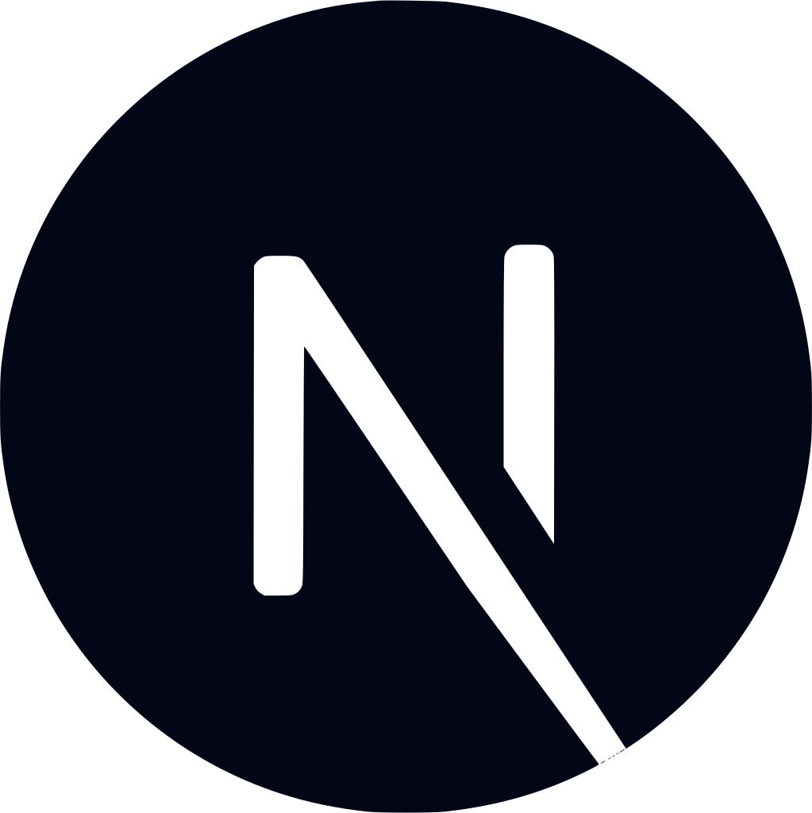

About
Skills
JavaScript
Typescript
React

NextJS
TailwindCSS
Git
Vite
Webpack
NPM
Jest
Firebase
Projects
Medium Clone

Summary
A platform for writers to share their articles (markdown supported) and read articles from other writers
Technologies
ReactJS, Typescript, Firebase, TailwindCSSTodo List

Summary
A responsive Todo List application that uses Firebase to store todos and projects. You can either create an account to use, or continue as a guest.
Technologies
JavaScript, Firebase, Webpack, date-fnsWhere's Waldo

Summary
An interactive version of "Where's Waldo?", a game where players try to find several characters hidden inside a picture. In this version, players are timed. Upon completion, the user may enter their name into a leaderboard stored in firebase.